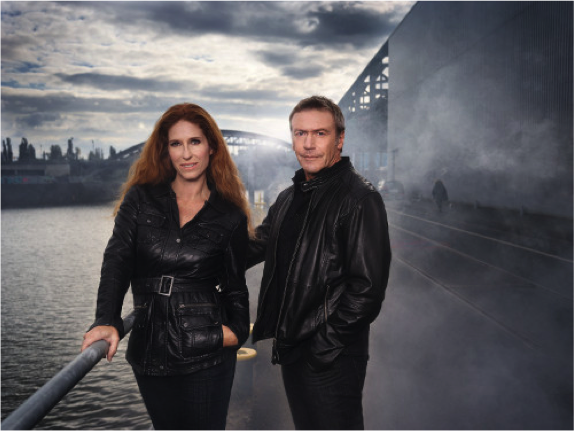

Autore: Ursula Poznanski e Arno Strobel
Editore: Giunti
Pagine: 416
Genere: Thriller
Anno Pubblicazione: 2017
Joanna ed Erik si conoscono e non si riconoscono, o forse, più semplicemente, non si conoscono affatto.
Joanna, mentre si accinge a trascorrere una serata in pieno relax, si ritrova in casa un giovane uomo che non conosce, che non ha scassinato la porta, che non è entrato furtivamente come un ladro, che non le sta rubando nulla e non le sta facendo del male ma che, soprattutto, dice di essere il suo fidanzato Erik.
Erik, dopo una faticosa giornata di lavoro, rientra a casa e trova la sua fidanzata Joanna che lo supplica di non farle del male, che lo allontana e si allontana con il terrore dipinto sul viso ma che, soprattutto, dice di non conoscerlo.
Ma cosa sta succedendo? Uno dei due sta forse mentendo?
Erik risponde a tono a tutti gli interrogativi posti dalla giovane donna ma, se fosse lui a dire la verità, perché non c'è traccia di una sua precedente presenza nella casa? E tutti i suoi vestiti, dove sono finiti?
Per di più, in questo momento nero, ci mancava solo la visita del collega Bernhard per un consulto di lavoro!
Joanna, allibita, non crede alle proprie orecchie, quest’uomo la sta incastrando, ha recuperato tutte le informazioni possibili sul suo conto per ingannarla ed ora sta aspettando solo il momento giusto per passare all'attacco, non ha capito di che genere di attacco si tratti ma assecondarlo sembra la mossa giusta per poi fuggire a sorpresa.
Sperava nell’aiuto dell’amica Ela ma anche lei non sembra essere dalla sua parte, sicuramente è in combutta con questo Erik, ma cosa vorranno mai? Certo i soldi, avrebbe dovuto pensarci prima, i suoi soldi, o meglio, i soldi di suo padre.
Nel frattempo, per accontentarli, facciamo una visita, magari la medicina ha una risposta a quello che gli altri dicono siano vuoti di memoria.
Erik non può proprio mancare al lavoro, dopo la visita a sorpresa della sera precedente e la sua fidanzata che voleva scappare in accappatoio, sarà diventato lo zimbello dell'azienda, chissà se al rientro a casa troverà la sua Joanna o una donna che non riconosce o, peggio ancora, nessuno.
Comunque è lei la donna che ama pertanto si ripropone di starle accanto e di riempire, attraverso i ricordi, quei buchi neri che incutono terrore: questa è la decisione che ha preso.
Ma le sue cose dove sono finite, come hanno fatto a sparire in maniera così rapida e minuziosa?
Qui, qualcuno è impazzito, ma chi?
Joanna, in un letto d’ospedale, ricorda poco, stava facendo la doccia e poi uno svenimento improvviso, un altro attacco per metterla fuori gioco, forse era questo il piano ma guardando gli occhi dell’uomo che le sta accanto, le tiene la mano e sprizza amore e preoccupazione da ogni muscolo, comprende che non può essere stato lui. Questa volta è solo colpa del boiler, un inconveniente che può capitare a chiunque, un boiler guasto, tra l'altro lei non se ne intende proprio di questi aggeggi.
Non sa bene cosa sia accaduto veramente ma Erik sente che è l'occasione giusta per ricominciare, per tornare a essere quello che erano prima di questi strani avvenimenti, una brutta parentesi da dimenticare, sente che adesso anche Joanna non è più ostile, sarà la debolezza per l'intossicazione da monossido di carbonio ma non importa, è il momento di agire.
A casa e insieme, nonostante lo psicologo aziendale Bartsch mandato per mettere più in cattiva luce Erik ed estrometterlo così dai progetti più importanti, nonostante le incursioni della sua ex Nadine, nonostante quegli attacchi che Joanna ha contro se stessa, cercano di trovarsi o ritrovarsi. Fino a quel momento in cucina, fino a quel momento di pazza felicità.
Calma...ma tanto non c’è più niente da capire, è finita.
Finita? Questo è quello che credete voi, il peggio deve ancora iniziare.
Chi sono quei morti e feriti di cui scorrono le immagini in televisione?
C’è odore, anzi puzza, di pericolo, pericolo vero ed è per questo che inizia una corsa contro il tempo, una corsa per rimanere in vita dove non importa più se ci si conosceva prima oppure no, dove l'unica ancora di salvezza è la fiducia reciproca perché intorno si sta creando il vuoto e questo significa che il vero obiettivo sta per essere centrato.
Una corsa o un volo verso l'Australia, non è questo l'importante, l'importante è scappare e non guardarsi indietro, ma come si fa a non guardarsi indietro dopo tutto ciò che è successo?
Sembra finita anche questa volta ma credete male, adesso è finita ma in un altro modo, forse per sempre e forse per entrambi.
Un libro scritto a quattro mani e che mani!
I due protagonisti, Joanna ed Erik, raccontano alternativamente i fatti e i sentimenti che abitano dentro di loro. Le percezioni di entrambi vengono descritte in modo così reale che sembrano le tue e credi di vivere in prima persona questa terribile tragedia, perché di tragedia si tratta. Tornare a casa e non riconoscere più chi vive con te deve essere un'esperienza devastante e può solo farti credere di essere pazza.
La prima parte del libro è un concentrato di adrenalina pura, un pieno di suspense e tensione mentale per cui è impossibile distrarsi.
La seconda parte è un po’ diversa, diventa più una corsa contro gli eventi e contro la paura, contiene un po’ meno adrenalina e più curiosità di capire come andrà a finire.
Il finale è spiazzante, in particolare considerando da dove siamo partiti.
Vorresti alzarti, smettere di leggere e guardare dietro di te, vorresti correre nella stanza accanto per vedere se è tutto in ordine, tendere l'orecchio per percepire i rumori più flebili ma non puoi perché i tuoi occhi sono incollati alle parole che scorrono inesorabili e non hai via di scampo se non continuare a leggere.
Percepisci un fiato estraneo sul collo, un cubetto di ghiaccio ti scorre nelle vene e i battiti del cuore schizzano all'impazzata, in tutto questo devi ricordarti che stai solo leggendo.
Questo libro è una calamita, non riesci a staccartene, non riesci a pensare ad altro, vuoi solo leggere e arrivare all'ultima parola e quando ci arrivi pensi che sarebbe stato ancora più bello se non fosse mai finito.
 GLI AUTORI –
Ursula Poznanski, nata nel 1968 a Vienna è stata giornalista per riviste medico-scientifiche, successivamente scrittrice di libri per ragazzi e thriller.
Arno Strobel è nato in Germania nel 1962, è diventato scrittore a tempo pieno nel 2014, dopo aver lavorato a lungo presso l'ufficio IT di una grossa banca.
Se siete lettori appassionati visitate:
https://www.instagram.com/patrizia.arge